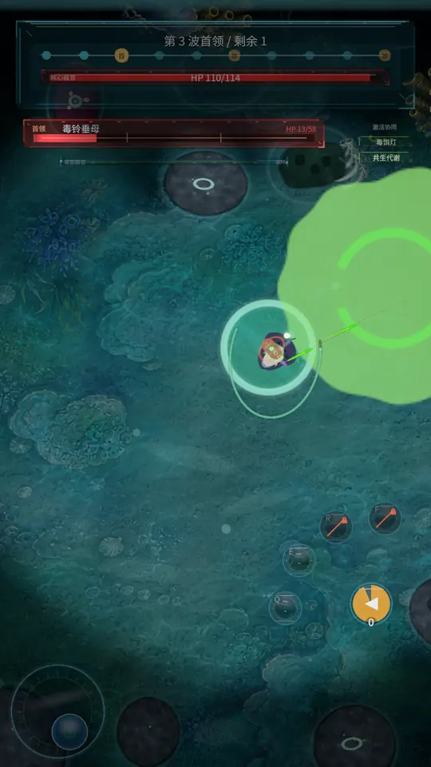
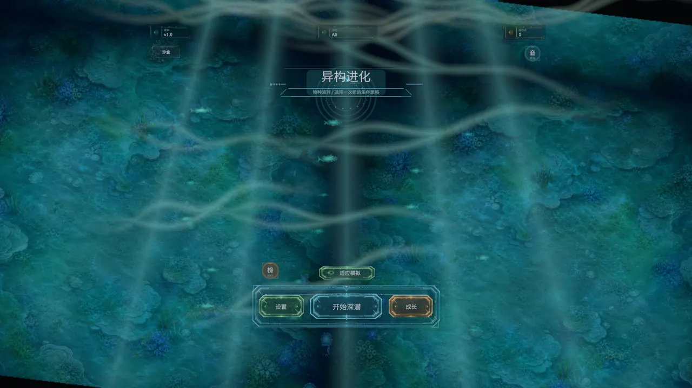
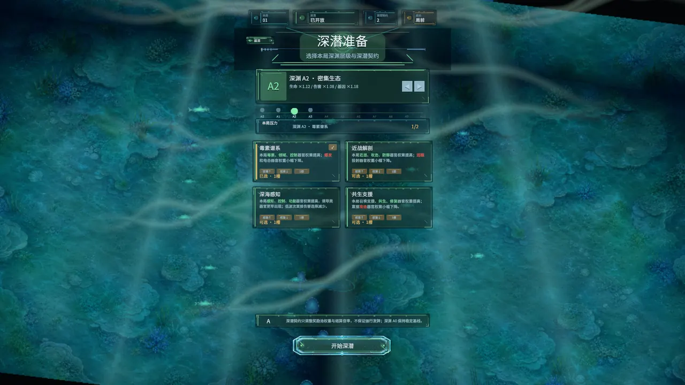
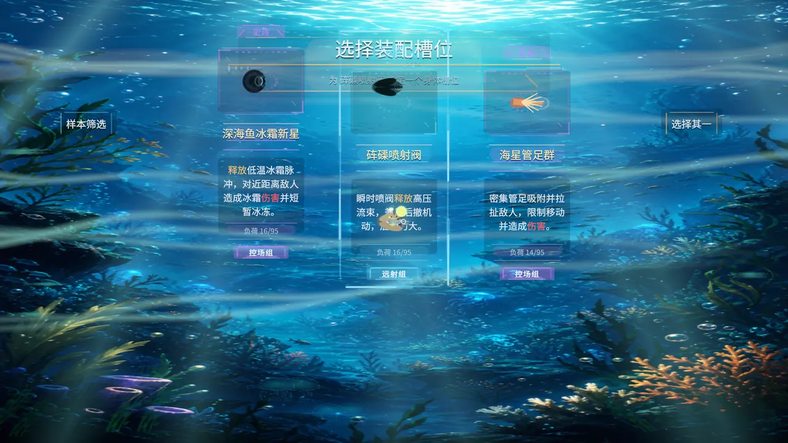
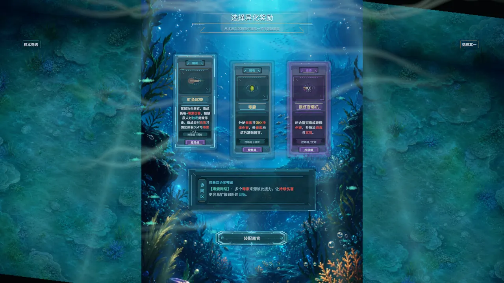
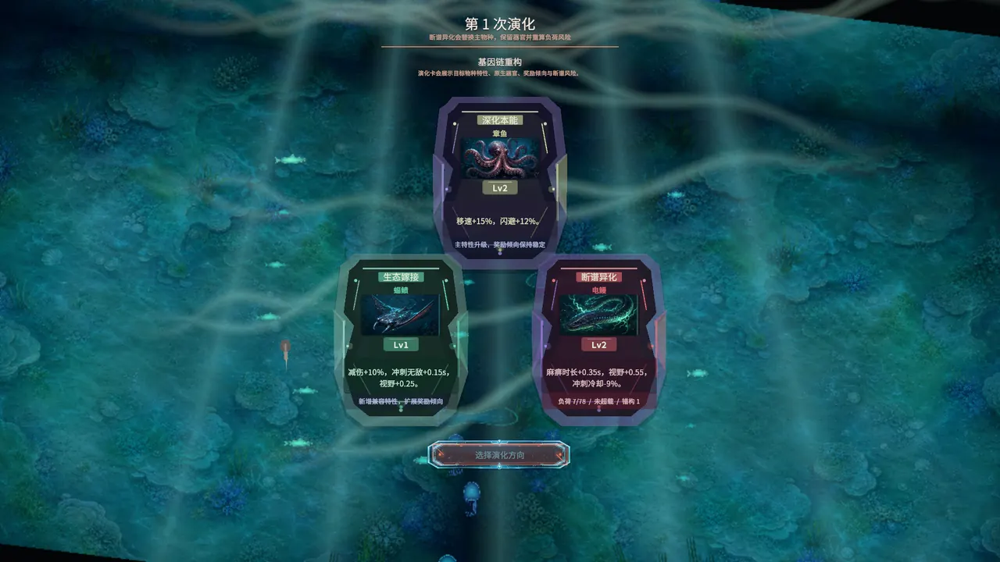
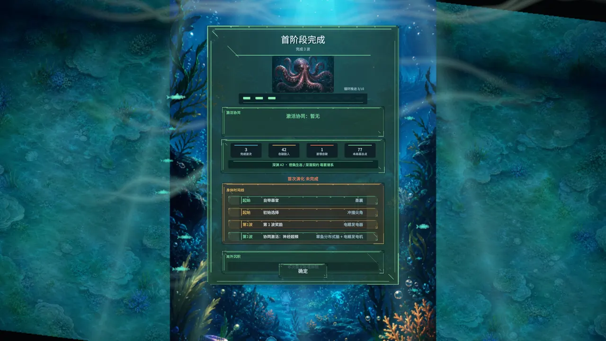

Remote venom and spacing
Keep distance, mark targets, stack poison, and let ranged organs keep working while the swarm chases through bad angles.
Fits players who like movement, retreat lines, and damage over time.Graft organs onto a strange deep-sea body, keep its synergies alive, and survive one more dive as the body breaks and mutates under pressure.
The new gameplay cut follows a mantis shrimp run built around impact. It shows how a melee body enters danger, uses movement to reset spacing, adds ranged damage when the arena gets crowded, then converts late pressure into a clean harvest.
The body does not start as a class. Organs, synergies, and damage risks push a run toward different rhythms, from clean kiting to risky close-range pressure.
Keep distance, mark targets, stack poison, and let ranged organs keep working while the swarm chases through bad angles.
Fits players who like movement, retreat lines, and damage over time.Stack shells, regeneration tissue, and close-range organs, then pressure enemies at the edge of what the body can repair.
The mantis shrimp cut leans into this route, with ranged organs covering unsafe gaps.Lay down fluid, toxin, or electric areas, then pull enemies across the edge where control and damage overlap.
A steadier route for players who like shaping the arena before the harvest.Use disguise to choose the target, open with a burst window, then leave before the body is forced into a fair fight.
Strong timing can pay off, but a missed window should feel dangerous.Use lures, cleaner shrimp, and symbiotic areas as a support layer while the player still makes the main combat decisions.
Support helps stabilize a run, but marked threats still need attention.Hetero-Genesis is about the run you can hold together, not a fixed class or weapon list. The deeper you go, the more each body choice starts to matter.
Pick a species, enter a short pressure-heavy dive, survive waves, draft rewards, and push toward the next boss.
Shells, venom glands, tentacles, rams, electric organs, sonic organs, and regeneration tissues all need room on the body.
Organs can unlock combat rules together, from poison pressure and electric control to defense, recovery, summons, and burst windows.
Important organs can be damaged or broken. A strong build can lose a key link until you find a repair window.
After boss fights, choose between deepening instinct, grafting ecology, or unstable mutation to steer the next stretch.
Abyss difficulty and dive contracts let later runs add pressure without changing the heart of the game.
Gene points unlock more species, contracts, and long-term options between dives.
Current content planning covers 10 playable species, 166 organ configurations, 119 synergy effects, 10 combat waves, A0-A10 difficulty, 24 deep-dive contracts, and 34 meta-progression unlocks. Final store pages will be checked against the submitted build.

These images come from the current build capture set prepared for store materials. Older screenshots are not used as current-version proof.





